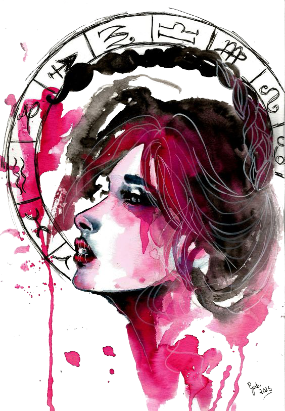

Scorpio rules the zodiac’s eighth house of intense bonding. In love, you play for keeps. There’s no middle ground for extreme Scorpio — you’re either in or you’re out. Your sign has quite a reputation. You’re known as the “sex” sign, jealous, controlling, irresistible, obsessive…whew!
The symbol for Scorpio is the scorpion. This creature was chosen because it typifies many of the characteristics of this sign. The scorpio person is not necessarily aggressive on its own, unless provoked and in general would rather be contemplative. They crave alone time and often become extremely annoyed when they don’t get it. Scorpio people are great secret keepers and feel each emotion more intensely than other signs. Perhaps because of this they are able to be quite discerning when assisting people with their problems. They are able to cut to the bottom line and show others the best and the worst in their lives.
Scorpio exhibit extreme self-control in many areas, and as a result expect that of those around them. They are disciplined, protective and are very interested in others. They give of themselves but do expect the same in return. Scorpio males and females both need to be the leaders, and excel at problem solving and troubleshooting projects and situations.